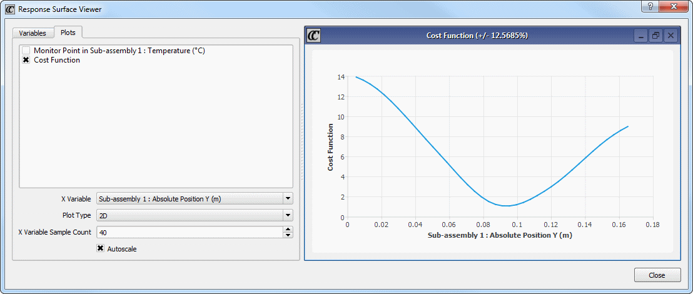
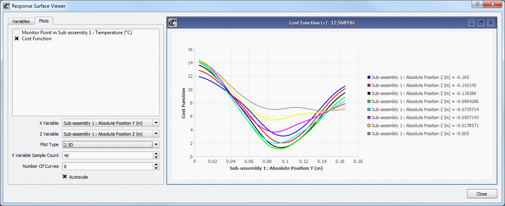
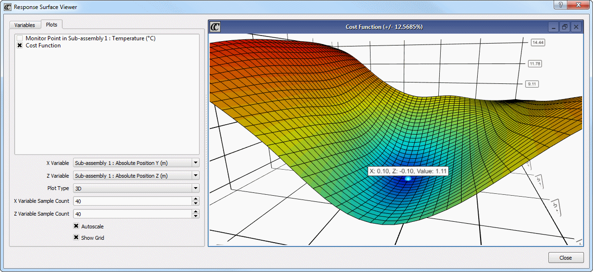

Includes
post-run operations. You can run an RSO several times to try and
improve on the optimum design.
Restrictions and Limitations
Ensure
the DoEs have been optimized without variable constraints.
When using Simcenter Flotherm remotely,
the Response Surface Viewer has limited support with some graphics
cards that support improved OpenGL over RDP. As a workaround, you
are advised to use VNC instead of RDP.
Procedure
- Define the input and output
variables, the cost function and build a set of experiments.
- Solve all
the scenarios.
- Click the Optimize icon or choose to
open the Optimize dialog box.
- Set the
Optimization Type to Response Surface From All and remove any Constraints.
- Click OK.
When the
optimization has completed, a new design is added to the Scenario
Table, named RSO Design-n. The
Solution Status is RSO Optimum (+/- %),
where % is a measure of difference
from the recommended optimum.
The Scenario
Table is populated with the expected values, italicized, of the
output parameters and the cost function.
- To view the results, click the Response Surface Viewer icon

- You can
perform any of the following post-run operations:
If you want to...
|
Do the following:
|
|---|
Compare RSO results.
|
Copy
the RSO-generated design, creating two identical scenarios, one
of which has response parameter values and cost function predicted
by the RSO.
Solve the other scenario to get calculated values
for the response parameters and cost function.
Comparing the results from the two scenarios will
confirm whether the predicted design is close to the true optimum.
|
Re-run an RSO.
|
Delete
the RSO-generated optimum design.
Re-run the RSO to see how the optimum design changes
when the results for the previously predicted optimum designs are
added to the set of designs being fitted.
|
Populate the design space.
|
Generate
further scenarios by re-running the DoE software.
Solve all the new scenarios.
Re-run the RSO.
|
Zoom in on a region of
the design space.
|
Refine
the input variable range as desired, for example, by reducing the range,
centered on the predicted optimum design.
Generate further designs by re-running the DoE
software.
Re-run the RSO.
|
Results
If there is more than one input variable, then
you can define 2.5D and 3D plots in the Response Surface Viewer.
Use the mouse scroll wheel to zoom in and out
of plots.
Left-click and drag to create a zoom area in 2D
and 2.5D plots; right-click to return to full view.
Right-click and drag in a 3D plot to rotate the
plot.
Examples
Figure 1. Response Surface Viewer 2D Plot
Figure 2. Response Surface Viewer 2.5D Plot
In Figure 3, a point
on the plot has been clicked to show its estimated value. The calculated
accuracy of values on the plot is shown in the title bar.
Figure 3. Response Surface Viewer 3D Plot
Tip Having selected
a point on a 3D plot, you can create a new scenario directly from
the Response Surface Viewer by opening the Variables tab (noting
that the variables values have changed to those at the selected
point on the plot) and clicking Create Scenario.